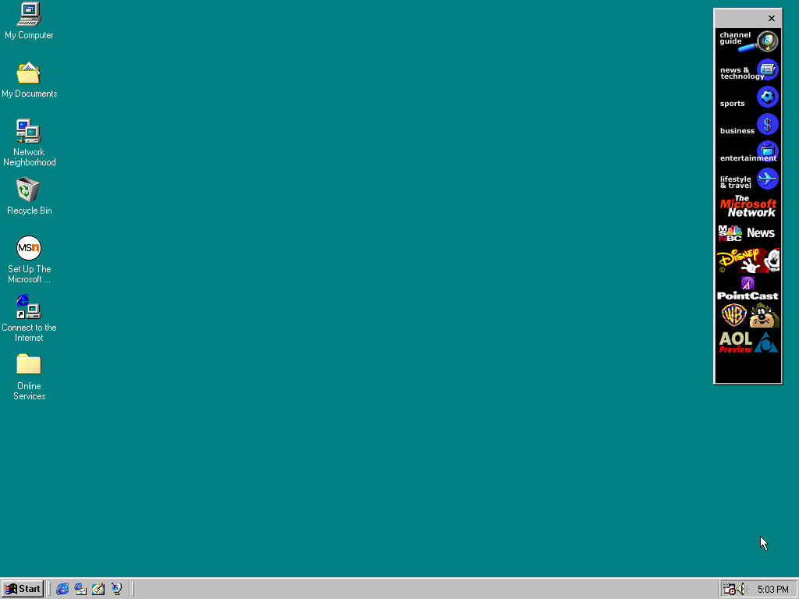
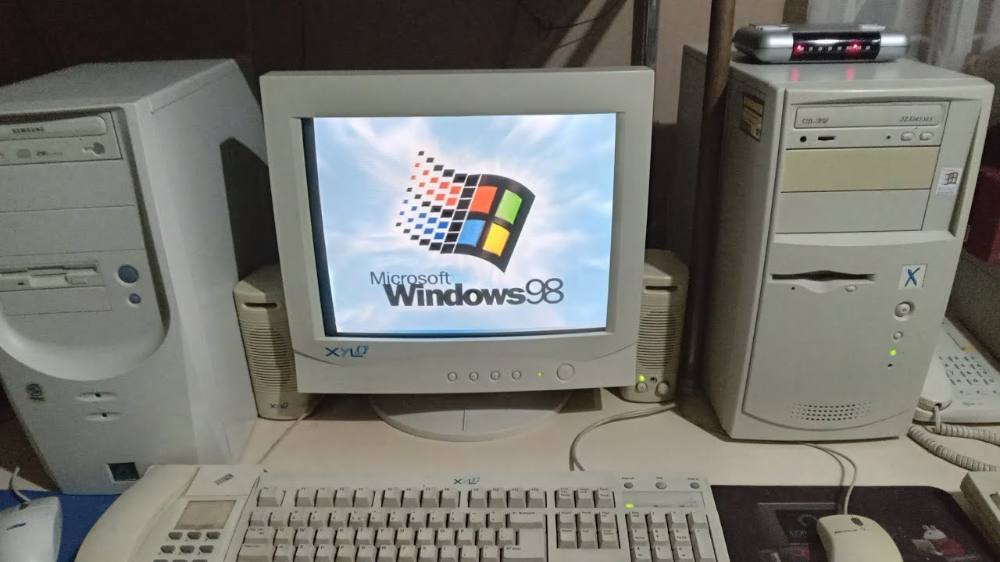

Microsoft Windows 98, випущена 25 червня 1998 року, була важливою віхою в історії операційних систем
Windows. Вона була наступницею Windows 95 і частиною лінійки Windows 9x, орієнтованої на домашніх
користувачів і малий бізнес. Кодова назва цієї версії під час розробки була "Memphis".
Windows 98 значно поліпшила підтримку нових технологій, таких як USB (Universal Serial Bus), що
дозволяло підключати периферійні пристрої без необхідності перезавантаження комп'ютера. Це зробило
використання нових гаджетів, таких як цифрові камери та принтери, більш зручним і простим.
Операційна система мала інтегрований веб-браузер Internet Explorer 4.0, що забезпечував легший
доступ до Інтернету. Інтеграція з веб-браузером дозволила користувачам швидше й зручніше переглядати
веб-сторінки та використовувати Інтернет для різних завдань.
Windows 98 швидко стала однією з найпопулярніших версій Windows завдяки своїм нововведенням і
покращенням. Вона заклала основу для багатьох майбутніх технологій та інтерфейсних рішень, які
Microsoft продовжувала розвивати в наступних версіях своєї операційної системи, таких як Windows ME
та Windows XP.
2. ІНТЕРФЕЙС
Інтерфейс Microsoft Windows 98 був створений для того, щоб забезпечити користувачів зручним і
інтуїтивно зрозумілим середовищем роботи. Він успадкував багато елементів дизайну від Windows 95,
але також включав ряд нововведень і покращень, які зробили його ще більш привабливим та
функціональним.
Робочий стіл Windows 98 залишився знайомим для користувачів Windows 95, з іконками для швидкого
доступу до програм, документів і системних налаштувань. Це забезпечувало зручність і легкість
використання.
Панель завдань продовжувала виконувати функцію центрального місця для керування відкритими вікнами
та запущеними програмами. Кнопка "Пуск" на панелі завдань відкривала меню "Пуск", де користувачі
могли швидко знайти програми, налаштування та документи.
Меню "Пуск" у Windows 98 було розширено і вдосконалено, надаючи користувачам ще більше можливостей
для налаштування та доступу до часто використовуваних програм і файлів. Структура меню залишалася
простою і логічною, що забезпечувало легкість навігації.
Однією з найбільших новинок у Windows 98 був Active Desktop, який дозволяв розміщувати веб-вміст
прямо на робочому столі. Це включало живі новинні стрічки, прогнози погоди та інші інтерактивні
елементи. Active Desktop забезпечував динамічність і інтерактивність робочого середовища, що було
новаторським на той час.
Панель швидкого запуску була додана до панелі завдань, що дозволяло користувачам запускати програми
з однієї кнопки, без необхідності відкривати меню "Пуск". Це значно прискорювало доступ до часто
використовуваних програм.

Інтерфейс Windows 98

Компютор з Windows 98
3. Думка користувачів
Користувачі Microsoft Windows 98 здебільшого висловлювали позитивні враження про цю операційну
систему. Вона принесла багато нових функцій та поліпшень, які значно підвищили зручність
використання та продуктивність.
Багато користувачів відзначали, що Windows 98 була значно стабільнішою та надійнішою порівняно з
Windows 95. Вона мала менше збоїв і аварій, що робило її привабливою для домашнього використання і
малого бізнесу. Windows 98 отримала високу оцінку за покращену підтримку нового обладнання, особливо
USB-пристроїв.
Це значно спростило процес підключення периферійних пристроїв, таких як принтери, сканери та цифрові
камери. Інтеграція Internet Explorer 4.0 в систему була сприйнята позитивно, оскільки це полегшило
доступ до
Інтернету. Користувачі цінували можливість швидкого і зручного перегляду веб-сторінок безпосередньо
через операційну систему. Хоча функція Active Desktop не використовувалась усіма користувачами,
багато хто вважав її корисною для доступу до оновлюваної інформації прямо на робочому столі. Це
зробило роботу з комп’ютером більш інтерактивною і динамічною. Покращення в області мультимедіа,
зокрема обробки звуку, відео та графіки, зробили Windows 98 популярною серед домашніх користувачів,
які використовували свої комп’ютери для розваг, таких як перегляд фільмів і прослуховування музики.